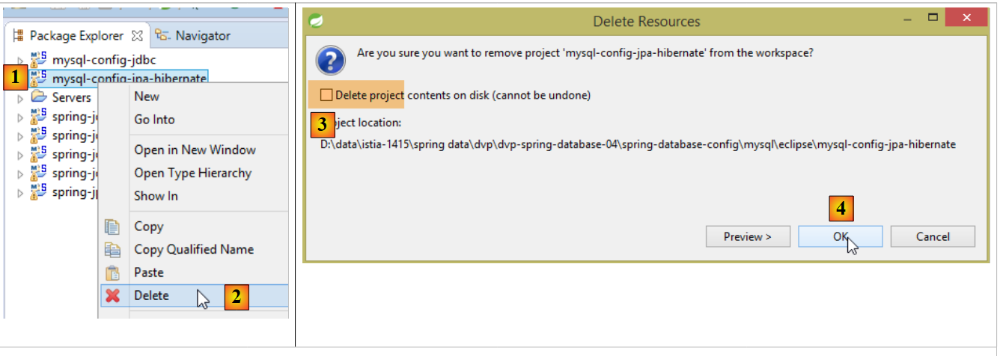
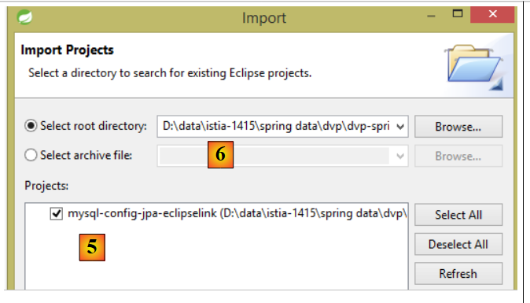
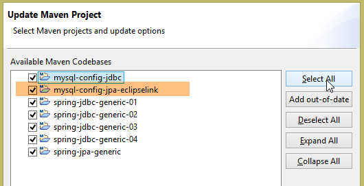
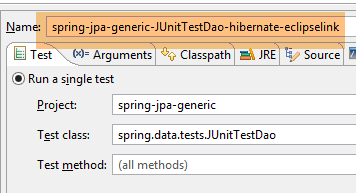
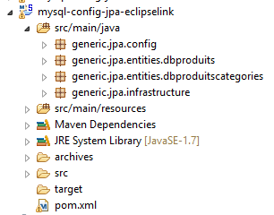
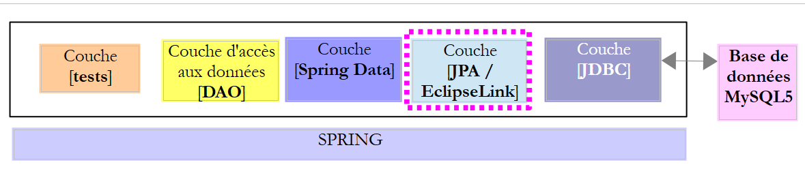
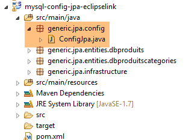
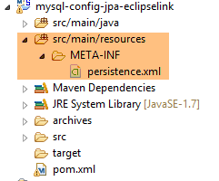
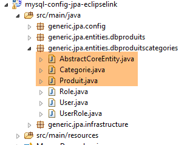
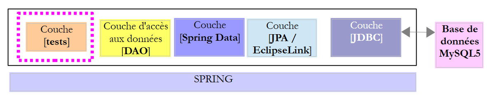

7. Spring Data JPA EclipseLink
7.1. Introduction
We are reusing the previous architecture, which we are now implementing with a JPA/EclipseLink layer.
 |
7.2. Setting up the development environment
Using STS, download the [myql-config-jpa-hibernate] project [1-4]:
 |
then import the [mysl-config-jpa-eclipselink] project [5] located in the [<examples>/spring-database-config/mysql/eclipse] folder [6]:
 |
Once this is done, refresh the Maven environment (Alt-F5) for all projects in [Package Explorer]:
 |
Then, to verify the working environment, run the build configuration named [spring-jpa-generic-JUnitTestDao-hibernate-eclipselink]:
 |
This configuration runs the [JUnitTestDao] test. This test should pass:
 |
7.3. The JPA layer configuration project
 |
The purpose of this project is to configure the JPA layer of the architecture shown below:
 |
7.3.1. Maven Configuration
The project is a Maven project configured by the following [pom.xml] file:
<project xsi:schemaLocation="http://maven.apache.org/POM/4.0.0 http://maven.apache.org/xsd/maven-4.0.0.xsd"
xmlns="http://maven.apache.org/POM/4.0.0" xmlns:xsi="http://www.w3.org/2001/XMLSchema-instance">
<modelVersion>4.0.0</modelVersion>
<groupId>dvp.spring.database</groupId>
<artifactId>generic-config-jpa</artifactId>
<version>0.0.1-SNAPSHOT</version>
<name>mysql openjpa configuration</name>
<parent>
<groupId>org.springframework.boot</groupId>
<artifactId>spring-boot-starter-parent</artifactId>
<version>1.2.3.RELEASE</version>
</parent>
<dependencies>
<!-- variable dependencies ********************************************** -->
<!-- JPA provider -->
<dependency>
<groupId>org.eclipse.persistence</groupId>
<artifactId>eclipselink</artifactId>
<version>2.6.0</version>
</dependency>
<!-- constant dependencies ********************************************** -->
<!-- Spring Data -->
<dependency>
<groupId>org.springframework.data</groupId>
<artifactId>spring-data-jpa</artifactId>
</dependency>
<!-- legacy JDBC configuration -->
<dependency>
<groupId>dvp.spring.database</groupId>
<artifactId>generic-config-jdbc</artifactId>
<version>0.0.1-SNAPSHOT</version>
<exclusions>
<exclusion>
<groupId>org.springframework.boot</groupId>
<artifactId>spring-boot-starter-jdbc</artifactId>
</exclusion>
</exclusions>
</dependency>
</dependencies>
<properties>
<project.build.sourceEncoding>UTF-8</project.build.sourceEncoding>
<java.version>1.7</java.version>
</properties>
<build>
<plugins>
<!-- [https://flexguse.wordpress.com/2013/08/10/maven-spring-data-jpa-eclipselink-and-static-weaving/] -->
<plugin>
<groupId>org.apache.maven.plugins</groupId>
<artifactId>maven-surefire-plugin</artifactId>
<version>2.18.1</version>
</plugin>
<!-- This plugin ensures EclipseLink static weaving -->
<plugin>
<artifactId>staticweave-maven-plugin</artifactId>
<groupId>de.empulse.eclipselink</groupId>
<version>1.0.0</version>
<executions>
<execution>
<goals>
<goal>weave</goal>
</goals>
<phase>process-classes</phase>
<configuration>
<logLevel>ALL</logLevel>
<!-- <includeProjectClasspath>true</includeProjectClasspath> -->
</configuration>
</execution>
</executions>
<dependencies>
<dependency>
<groupId>org.eclipse.persistence</groupId>
<artifactId>eclipselink</artifactId>
<version>2.6.0</version>
</dependency>
</dependencies>
</plugin>
</plugins>
<pluginManagement>
<plugins>
<!--This plugin's configuration is used to store Eclipse m2e settings only. It has no influence on the Maven build itself. -->
<plugin>
<groupId>org.eclipse.m2e</groupId>
<artifactId>lifecycle-mapping</artifactId>
<version>1.0.0</version>
<configuration>
<lifecycleMappingMetadata>
<pluginExecutions>
<pluginExecution>
<pluginExecutionFilter>
<groupId>
de.empulse.eclipselink
</groupId>
<artifactId>
staticweave-maven-plugin
</artifactId>
<versionRange>
[1.0.0,)
</versionRange>
<goals>
<goal>weave</goal>
</goals>
</pluginExecutionFilter>
<action>
<execute>
<runOnIncremental>true</runOnIncremental>
</execute>
</action>
</pluginExecution>
</pluginExecutions>
</lifecycleMappingMetadata>
</configuration>
</plugin>
</plugins>
</pluginManagement>
</build>
</project>
- lines 5–7: the Maven artifact generated by this project. It is the same as that of the [mysql-config-jpa-hibernate] project. This means that only one of these projects can be active at any given time;
- lines 10–14: the parent Maven project that specifies the versions of most of the dependencies required by the project;
- lines 19–22: the EclipseLink library;
- lines 26–29: the Spring Data library;
- lines 32–34: the JPA layer configuration project builds on the JDBC layer configuration project, which defines, among other things, the JDBC driver for the DBMS being used and the connection details for the database;
- lines 35–40: the JDBC layer configuration project includes the [Spring JDBC] library, which is replaced here by the [Spring Data JPA] library. Therefore, we specify not to include it in the project dependencies. However, if it remains, this does not cause any errors;
- The plugin in lines 58–81 implements JPA entity weaving. What is known as weaving is the transformation (enrichment) of JPA entities so that they support lazy loading. We did not need to configure Hibernate for this weaving to occur. For EclipseLink, a Maven plugin is required. I spent a long time trying to figure out how to force EclipseLink to respect the [fetch = FetchType.LAZY] attribute of the [@ManyToOne] annotation below:
@ManyToOne(fetch = FetchType.LAZY)
@JoinColumn(name = ConfigJdbc.TAB_PRODUITS_CATEGORIE_ID)
private Categorie categorie;
The JPA specification states that the [fetch = FetchType.LAZY] attribute of the [@ManyToOne] annotation is a "hint" that the JPA implementation is not required to follow. And indeed, EclipseLink does not follow it by default. A special configuration is required for it to do so. After much fruitless searching, I found the solution at the URL cited on line 51. When lines 58–81 are included in the [pom.xml] file, Eclipse reports an error on the file. This is a configuration issue with the [m2e] plugin, which handles Maven projects within Eclipse. You need to add lines 83–119 to resolve the error.
In the end, the dependencies are as follows:
 |
7.3.2. Spring Configuration
 |
The [ConfigJpa] class configures the Spring project:
package generic.jpa.config;
import generic.jdbc.config.ConfigJdbc;
import javax.persistence.EntityManagerFactory;
import org.apache.tomcat.jdbc.pool.DataSource;
import org.springframework.context.annotation.Bean;
import org.springframework.context.annotation.Configuration;
import org.springframework.context.annotation.Import;
import org.springframework.orm.jpa.JpaTransactionManager;
import org.springframework.orm.jpa.JpaVendorAdapter;
import org.springframework.orm.jpa.LocalContainerEntityManagerFactoryBean;
import org.springframework.orm.jpa.vendor.Database;
import org.springframework.orm.jpa.vendor.EclipseLinkJpaVendorAdapter;
import org.springframework.transaction.PlatformTransactionManager;
@Configuration
@Import({ ConfigJdbc.class })
public class ConfigJpa {
// the JPA provider
@Bean
public JpaVendorAdapter jpaVendorAdapter() {
// Note: JPA entities and EclipseLink configuration are in the META-INF/persistence.xml file
EclipseLinkJpaVendorAdapter eclipseLinkJpaVendorAdapter = new EclipseLinkJpaVendorAdapter();
eclipseLinkJpaVendorAdapter.setShowSql(false);
eclipseLinkJpaVendorAdapter.setDatabase(Database.MYSQL);
eclipseLinkJpaVendorAdapter.setGenerateDdl(true);
return eclipseLinkJpaVendorAdapter;
}
// data source
@Bean
public DataSource dataSource() {
// TomcatJdbc data source
DataSource dataSource = new DataSource();
// JDBC access configuration
dataSource.setDriverClassName(ConfigJdbc.DRIVER_CLASSNAME);
dataSource.setUsername(ConfigJdbc.USER_DBPRODUITSCATEGORIES);
dataSource.setPassword(ConfigJdbc.PASSWD_DBPRODUITSCATEGORIES);
dataSource.setUrl(ConfigJdbc.URL_DBPRODUITSCATEGORIES);
// Initial open connections
dataSource.setInitialSize(5);
// result
return dataSource;
}
// EntityManagerFactory
@Bean
public EntityManagerFactory entityManagerFactory(JpaVendorAdapter jpaVendorAdapter, DataSource dataSource) {
LocalContainerEntityManagerFactoryBean factory = new LocalContainerEntityManagerFactoryBean();
factory.setJpaVendorAdapter(jpaVendorAdapter);
factory.setDataSource(dataSource);
factory.afterPropertiesSet();
EntityManagerFactory entityManagerFactory = factory.getObject();
return entityManagerFactory;
}
// Transaction manager
@Bean
public PlatformTransactionManager transactionManager(EntityManagerFactory entityManagerFactory) {
JpaTransactionManager txManager = new JpaTransactionManager();
txManager.setEntityManagerFactory(entityManagerFactory);
return txManager;
}
}
This configuration is similar to the one described in Section 6.3.2 for the Hibernate JPA implementation. We will only detail the differences:
- lines 23–31: the [jpaVendorAdapter] bean is now implemented with EclipseLink;
- lines 50–58: in the Hibernate JPA version, the code was:
factory.setPackagesToScan(ENTITIES_PACKAGES);
which was used to specify where to look for JPA entities. Here, we rely on the [persistence.xml] file (comment on line 25) (see section 6.3.4) to both:
- define the JPA entities;
- configure EclipseLink for weaving these entities; ## 7.4. The [persistence.xml] file
 |
<?xml version="1.0" encoding="UTF-8"?>
<persistence version="1.0" xmlns="http://java.sun.com/xml/ns/persistence" xmlns:xsi="http://www.w3.org/2001/XMLSchema-instance"
xsi:schemaLocation="http://java.sun.com/xml/ns/persistence http://java.sun.com/xml/ns/persistence/persistence_1_0.xsd">
<persistence-unit name="generic-jpa-entities-dbproduitscategories" transaction-type="RESOURCE_LOCAL">
<!-- JPA entities -->
<class>generic.jpa.entities.dbproduitscategories.Category</class>
<class>generic.jpa.entities.dbproduitscategories.Product</class>
<class>generic.jpa.entities.dbproduitscategories.User</class>
<class>generic.jpa.entities.dbproduitscategories.Role</class>
<class>generic.jpa.entities.dbproduitscategories.UserRole</class>
<exclude-unlisted-classes>true</exclude-unlisted-classes>
<!-- Properties required for the [@ManyToOne] to be fetched in LAZY mode -->
<properties>
<property name="eclipselink.weaving" value="static" />
<property name="eclipselink.weaving.lazy" value="true" />
<property name="eclipselink.weaving.internal" value="true" />
</properties>
</persistence-unit>
</persistence>
- line 4: the persistence unit. It can have any name (name attribute);
- lines 6–10: the five JPA entities to be managed;
- Line 11 is important. Sometimes a project defines entities used in different contexts. Line 11 ensures that there will be no entities other than those defined in lines 5–10. This is important when these entities are used to generate the data source tables. Having extra entities would generate extra tables;
- Lines 13–17: EclipseLink configuration for static weaving. There are two types of weaving:
 |
JPA entities are those described in Section 6.3.3 for the Hibernate implementation, with two differences:
- all JPA entities have the [@Cache(alwaysRefresh = true)] annotation, which disables the EclipseLink cache. In this document, the caches of the JPA implementations used are not utilized. The EclipseLink cache appears to be enabled by default and caused errors in the tests.
@Entity
@Table(name = ConfigJdbc.TAB_CATEGORIES)
@JsonFilter("jsonFilterCategorie")
@Cache(alwaysRefresh = true)
public class Category implements AbstractCoreEntity {
- All [@OneToMany] annotations are accompanied by the [@CascadeOnDelete] annotation:
@OneToMany(fetch = FetchType.LAZY, mappedBy = "category", cascade = { CascadeType.ALL })
@CascadeOnDelete
private List<Product> products;
This annotation plays a role when generating tables from JPA entities. It adds the SQL attribute [ON DELETE CASCADE] to the foreign keys (here PRODUCTS[CATEGORY_ID] ---> CATEGORIES[ID]) the SQL attribute [ON DELETE CASCADE], which ensures that whenever a category is deleted from the [CATEGORIES] table, the corresponding products in the [PRODUCTS] table are also deleted;
Note: It is important to note that this annotation is used both when creating the table, as we have just seen, and when querying it. EclipseLink assumes that the SQL attribute [ON DELETE CASCADE] is present and uses it whenever it is asked to delete a category. Its absence would cause errors.
7.6. The test layer
 |
 |
The tests above are identical to those for the Spring JDBC and Spring JPA Hibernate implementations. Refer to the following pages if necessary:
- [JUnitTestCheckArguments]: section 4.11.1;
- [JUnitTestDao]: section 4.11.2;
- [JUnitTestPushTheLimits]: section 4.11.3;
- [JUnitTestProxies]: section 6.4.5;
The results obtained are as follows:
 |
 |
- in [1], [JUnitTestPushTheLimits-EclipseLink]: 70.583 s
- in [2], [JUnitTestPushTheLimits-Hibernate]: 78.945 s
- in [3], [JUnitTestPushTheLimits-JDBC]: 36.09 s
The [JUnitTestProxies] test produces the following console output:
Dumping the database --------------------------------
doNothing
Dumping the database --------------------------------
getShortCategoriesByName1 --------------------------------
Category type: PROXY
Category:
1
Dumping the database --------------------------------
getLongCategoriesByName1 --------------------------------
Type category: POJO
Category:
1
Dumping the database --------------------------------
getShortProductsByName1 --------------------------------
Product type: PROXY
Product category name:
category[0]
Dumping the database --------------------------------
getLongProductsByName1 --------------------------------
Product type: POJO
Product category name:
category[0]
Here we see that when accessing the [Category.products] field of a PROXY-type category and the [Product.category] field of a PROXY-type product, we successfully retrieve the information in both cases (lines 7 and 17). Among the three JPA implementations, this is the only one that allows this on PROXY entities.